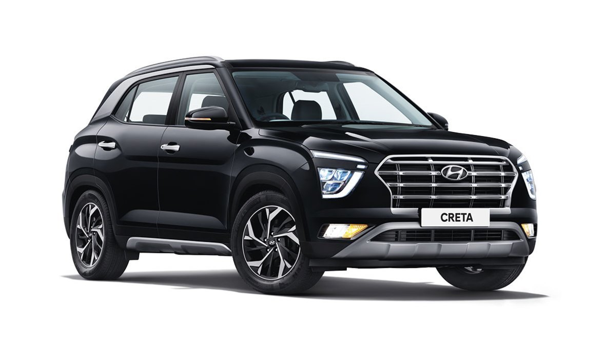

Honda Cars India Ltd. (HCIL) is an automobile manufacturer in India owned by Honda Motor
Co. Ltd.
HCIL's first manufacturing plant at Greater Noida began operations in 1997.
Honda set up its second plant in India at Tapukara in Alwar District of Rajasthan,
spread over 450 acres (1.8 km2) with an investment of ₹3526 crores.It operates under the
ISO 9001 standard for quality management and ISO 14001 for environment management.
HCIL has 371 dealership outlets across 121 cities in 20 states and 3 Union Territories
of India.
Hyundai Motor India Ltd is a wholly owned subsidiary of the Hyundai Motor Company
headquartered in South Korea. It is the second largest automobile manufacturer with
16.2% market share as of February 2019 and US$5.5 billion turn-over in India.
HMIL's first car, the Hyundai Santro was launched on 23 September 1998 and was a runaway
success.
HMC has set up a research and development facility (Hyundai Motor India Engineering) in
the cyber city of Hyderabad.
HMIL has two manufacturing plants in Irungattukottai and Sriperumbudur in Tamil Nadu.
HMIL has 475 dealers and more than 1,300 service points across India. HMIL has the
second largest sales and service network in India after Maruti Suzuki.

Current Models - Santro ,i10,i20,Aura,Verna,Elantra,Venue,Creta,Alcasar,Tucson.
For more information, visit Official Site:- Hyundai
KIA
Kia India Private Limited is a subsidiary of Kia for its operations in India. The
company was founded on 19 May 2017.
The construction of a new 536-acre manufacturing facility in Anantapur District, Andhra
Pradesh. The plant started its trial production in January 2019 and the mass production
of its first product, the Kia Seltos started on 31 July 2019.
The US$2 billion manufacturing plant is capable of producing 300,000 vehicles annually.
Maruti Suzuki India Limited, formerly known as Maruti Udyog Limited, is an Indian
automobile manufacturer, based in New Delhi.
As of September 2021 Maruti Suzuki has a market share of 49 percent in the Indian
passenger car market.
Maruti Suzuki has two manufacturing facilities in Haryana (Gurgaon and Manesar), and one
manufacturing complex in Gujarat.
All manufacturing facilities have a combined production capacity of 2,250,000 vehicles
annually (1.5 million from Maruti Suzuki's two plants and 750,000 from Suzuki Motor
Gujarat).
Maruti Suzuki India its service network has crossed 4,000 outlet mark across the
country. These outlets cover 1,989 Indian towns and cities.
Current Models - Alto ,S-Presso,Wagon R,
Celerio,Swift,Baleno,Dzire,Ciaz,Ignis,Vitara Brezza,S-cross,Eeco,Ertiga,XL6.
For more information, visit Official Site:- Maruti Suzuki
RENAULT
Renault India Private Limted is a wholly owned subsidiary of Renault S.A., France.
Renault cars are manufactured at the manufacturing facility located in Oragadam, Chennai,
with a capacity of 480,000 units pa with 3 shifts per day.
Renault received more awards in one year than any of its market competitors. Since 2012, the
Renault Duster received 29 awards in India and the Renault company 34 awards.
Renault currently has 270 dealership across India.
Current Models - Renault Duster,Kwid,Triber,kiger
For more information, visit Official Site:- Renault
SKODA
Skoda Auto India Pvt Ltd. has been operating in India since November 2001 as a subsidiary of
Skoda Auto, one of the fastest growing car manufacturers in Europe.
It has set up a modern manufacturing facility in Shendra near Aurangabad, Maharashtra. The
facility is spread across 300,000 m2.
On 7 October 2019, Volkswagen Group India announced the merger of its three Indian
subsidiaries including ŠKODA Auto India Pvt Ltd into a new entity named Škoda Auto
Volkswagen India with headquarters at Pune.
The Octavia was the first domestically built Škoda to be launched in India.
The company has a network of 200 outlets across the country.
Current Models - Superb,Octavia,Kodiaq,Kushaq,Slavia.